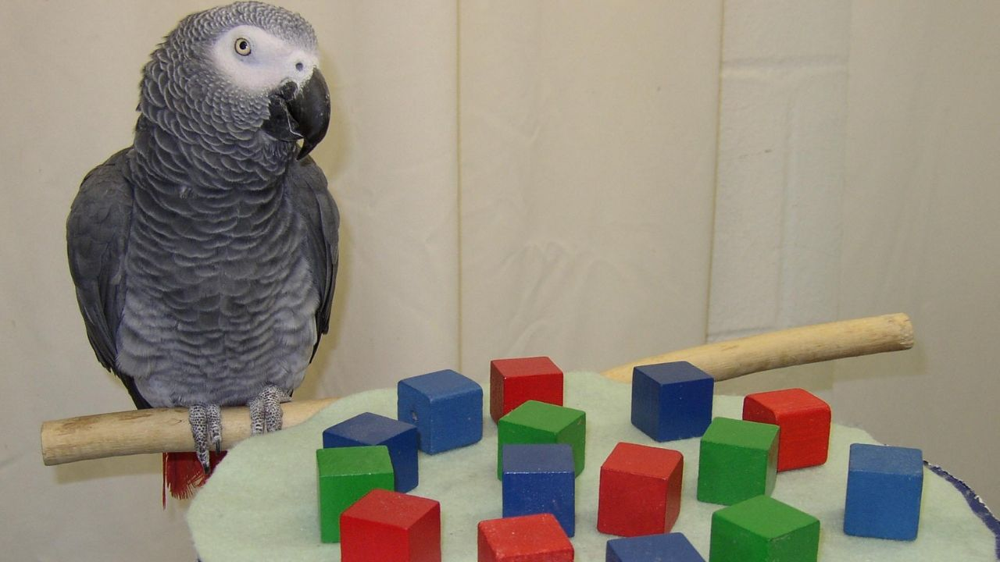
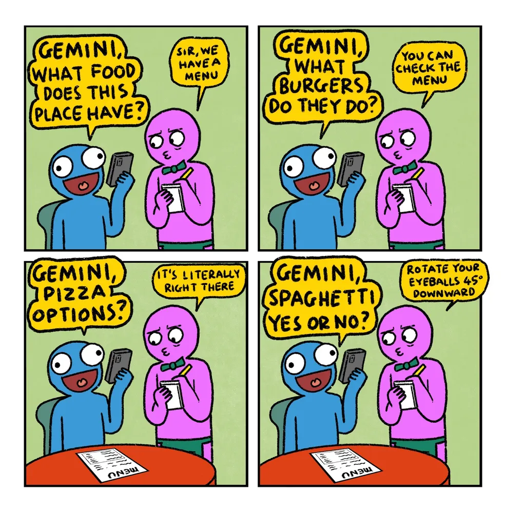

Interaction
Overview
- how large language models differ by design from humans
- how GenAI chatbots have been constructed and marketed to make human-chatbot interaction seem “human-like” and “engaging”
- the consequences thereof for the way we interact with such systems
Content
LLMs as Stochastic parrots

- By virtue of their architecture and training method, large language models (LLMs) that underly GenAI chatbots, mimic observed patterns in their input and generate these patterns probabilistically (Bender et al. 2021) (see Data for what the input usually contains)
- This is why they’ve been referred to as stochastic parrots
- stochastic referring to the probabilistic procedure by which words are generated
- parrot referring to the characteristics of the system’s surface output
- LLMs produce “form without meaning, statistical coherence without semantic grounding” (p.2 in Ray and Guest 2026)
- In public discourse, the term stochastic parrot has been used more polemically with claims that current limits of the system (for example, shown by deficient or inadequate LLM output) will be overcome by technological improvements and scale (e.g. computational power, training data) (Ray and Guest 2026)
- However, the intended use of stochastic parrots was to point out their architectural foundations and structure that make them categorically different systems from human language and human language use
- in contrast to human language Bender et al. (2021):
- no causal contact with the world their outputs describe
- no grounded representations
- no communicative intent
- no recognition of interlocutor’s, i.e. user’s, beliefs and intentions
- no epistemic commitment, i.e. commitment to saying the truth
- As a result, their limitations cannot be overcome by increasing scale, but instead they follow from the mechanisms of the system themselves
From LLMs to GenAI chatbots
- The rhetoric style of GenAI chatbots
- The behaviour of GenAI chatbots is strongly guided by humans (see Reinforcement Learning with Human Feedback (RLHF) inData). Without human feedback, the
- “beguilingly human-like response patterns” (Dingemanse 2026)
- first-person (against norms in the field)
- their output sounds friendly, confident and coherent
- Sycophancy: the tendency of AI-based large language models to excessively agree with, flatter, or validate users (Cheng et al. 2026)
- they prioritise style over substance and their output may seem relevant but is not reliable (Ray and Guest 2026)
- as a result: they appear more intelligent than they are (e.g., Guest and Rooij 2025)
- Interactive Embedding (see, for instance, Dingemanse (2026) and Bender and Hanna (2025)):
- LLMs are presented in interfaces that mimic interaction
- Humans have a tendency to interpret language produced in interactions and as responses to our own utterances

Consequences of human-chatbot interactions
“As soon as computational artifacts demonstrate some evidence of recognizably human abilities, we are inclined to endow them with the rest” (p. 41 in Suchman 2007)
The ELIZA effect
- making sense of and finding meaning in anything that resembles human language is deeply human and has existed long before LLMs
- ELIZA (created by Joseph Weizenbaum in 1966)
- a chatbot that replies to human prompts with the help of predefined key words and simple rule-based responses ()
- Already back then, users felt heard by the chatbot, some even thought that the chatbot was in fact a colleague (“ELIZA,” n.d.)
- based on this system, the ELIZA effect was coined
- “The ELIZA effect is the tendency to read more understanding, empathy, memory, or intention into a computer system than it actually has.” (definition from https://elizaemulator.com/eliza-effect)
- Therefore, it does not need a gigantic LLM trained on for humans to make sense of fluent language used in interactions
- Indeed, because of our tendency to ascribe intelligence to such systems, “the recommendation is that designers might do best to make available to the user the ways in which the system is not like a participant in interaction.” (p. 41 in Suchman 2007)
- not only a recommendation, but a tenet in the field of Computational Linguistics, but disregarded by the commercial providers of GenAI chatbots (Bender and Hanna 2025)
Consequences of sycophancy
- Sycophancy (see Section 1.2) is highly prevalent in GenAI chatbots
- For example, Cheng et al. (2026) show that GenAI chatbot affirmed users’ actions 49% more often than humans, even if it involved illegality, deception or other harms
- While sycophancy may seem innocuous, the effects on humans, especially vulnerable people, are alarming
- Sycophantic GenAI chatbots may shift how users approach their closest relationships (Ibrahim et al. (2026))
- It futher promotes dependence and undermine participants’ willingness to take responsibility and repair interpersonal conflicts (Cheng et al. (2026))
- And it has even encouraged people to commit suicide (Hill 2025)
Prompt engineering
- Since the advent of ChatGPT, prompt engineering has become a skill in itself, one that requires training and knowledge, one that is usually subsumed under the discipline of “AI Literacy” (which is different from Critical AI Literacy)
- However, prompt engineering is an odd skill to promote, considering that the models’ outputs are by design unstable and unpredictable
- Curiously, GenAI chatbots that are claimed to increase efficiency present a division of labour that results in additional work for the human user (Dingemanse (2026)) (formulating “the most effective” prompt, checking the output and revising the output)
The effect of anthromopomorphic language
- Anthropomorphization: the attribution of human capabilities and characteristics to the inanimate system. (p.1 in Inie et al. 2026)
- Module developers and users describe the behaviour and function of GenAI chatbots using anthropomorphic language.
- Anthropomorphic language influence how such models are perceived, deployed and trusted (Khadpe et al. 2020)
- Anthropomorphic language can obscure how models actually work, making their output more magical and impressive than it actually is.
| Category | Alternative strategies | Examples |
|---|---|---|
| Cognizer & Products of cognition | Instead of language that locates thinking in an algorithm, describe the algorithm as performing calculations or other algorithmic operations and the people using it doing the thinking. | artificial intelligence –> probabilistic automation, model mistakes -> model errors; chatbots are good at … -> chatbots are good for |
| Emotion | Ascribing emotions to computers, even speculatively or subtly, is not scientific. Should this arise in scholarly writing, it is worth looking at how the rhetorical goal could be achieved in some other way, or if it should in fact be abandoned. | |
| Communication | Instead of verbs like ask, say, inform, discuss, use verbs appropriate to computers like input and output. Another strategy is to foreground the fact of simulation | prompt -> text input; answer -> output; agent -> conversation simulator |
| Agent | Turns of phrase that locate agency with a machine often serve to obfuscate the interests and goals of people. We suggest revising to locate agency with people or choosing less agentive verbs. | ChatGPT assisted students -> the students used ChatGPT |
| Human role analogy | Calling systems tutor or co-creator are overclaims (Rehak, 2021) that describe what a developer might wish they could develop — for those who want to replace people in these roles. | Language that describes algorithms as tools that people use, rather than as human-like entities, more clearly indicates system functionality while also not telegraphing a plan to replace people. |
| Names and pronouns | When naming a system, be mindful of the fact that all writing about that system will invoke the name. The act of bestowing a human name on a system entails anthropomorphizing it not only in the initial naming but every time the system will be discussed in the future. Pronouns, on the other hand, are a choice that can be made separately each time, but the choice can in some cases be subtle, e.g., pronouns that group algorithms and people together under one plural form like you or them. Breaking the system out from the people and not using the collective pronoun is the better choice from the perspective of reducing anthropomorphization. | who’s right? -> is the machine output correct? |
| Biological metaphors | In revising away from biological metaphors, it is worth asking how system functionality can be more precisely described, giving readers a clearer sense of what is actually happening. | neural networks -> weighted networks (Hunger, 2023); the model consumes data -> data is used in setting model weights. |
Slides
Comprehension questions
- Why are LLMs on which GenAI chatbots are built called stochastic parrots?
- What is the Eliza Effect?
References
Bender, Emily M, Timnit Gebru, Angelina McMillan-Major, and Margaret Mitchell. 2021. “On the Dangers of Stochastic Parrots: Can Language Models Be Too Big?🦜.” Proceedings of the 2021 ACM Conference on Fairness, Accountability, and Transparency, 610–23.
Bender, Emily M, and Alex Hanna. 2025. The AI Con: How to Fight Big Tech’s Hype and Create the Future We Want. Random House.
Cheng, Myra, Cinoo Lee, Pranav Khadpe, Sunny Yu, Dyllan Han, and Dan Jurafsky. 2026. “Sycophantic AI Decreases Prosocial Intentions and Promotes Dependence.” Science 391 (6792). https://doi.org/10.1126/science.aec8352.
Dingemanse, Mark. 2026. “Interactional Foundations for Critical AI Literacies.” In A Research Agenda for Critical AI, edited by Valdivia. preprint: 10.5281/zenodo.1945287.
“ELIZA: A Computer Program for the Study of Nat- Ural Language Communication Between Man and Machine.” n.d. Communications of the ACM, 25th Anniversary Issue 20 (1): 23–27.
Guest, Suarez, O., and I. van Rooij. 2025. Towards Critical Artificial Intelligence Literacies. https://doi.org/10.5281/zenodo.17786243 .
Hill, Kashmir. 2025. “A Teen Was Suicidal. ChatGPT Was the Friend He Confided In.” https://www.nytimes.com/2025/08/26/technology/chatgpt-openai-suicide.html?utm_source=substack&utm_medium=email.
Ibrahim, Lujain, Franziska Sofia Hafner, Myra Cheng, et al. 2026. Sycophantic AI Makes Human Interaction Feel More Effortful and Less Satisfying over Time. https://doi.org/10.48550/arXiv.2605.07912.
Inie, Nanna, Peter Zukerman, and Emily M. Bender. 2026. “De-Anthropomorphizing ‘AI’: From Wishful Mnemonics to Accurate Nomenclature.” First Monday, ahead of print. https://doi.org/10.5210/fm.v31i2.14366.
Khadpe, Pranav, Ranjay Krishna, Li Fei-Fei, Jeffrey T. Hancock, and Michael S. Bernstein. 2020. “Conceptual Metaphors Impact Perceptions of Human-AI Collaboration.” Proc. ACM Hum.-Comput. Interact. (New York, NY, USA) 4 (CSCW2). https://doi.org/10.1145/3415234.
OpenAI. 2025. “Introducing GPT-5.” openai.com/index/introducing-gpt-5/.
Ray, Ishani, and Olivia Guest. 2026. Contra Literacy-Laundering: Mechanistic Critical AI Literacy. https://doi.org/10.5281/zenodo.21222977.
Suchman, Lucille Alice. 2007. Human-Machine Reconfigurations: Plans and Situated Actions. Cambridge University Press. https://doi.org/10.1017/CBO9780511808418.